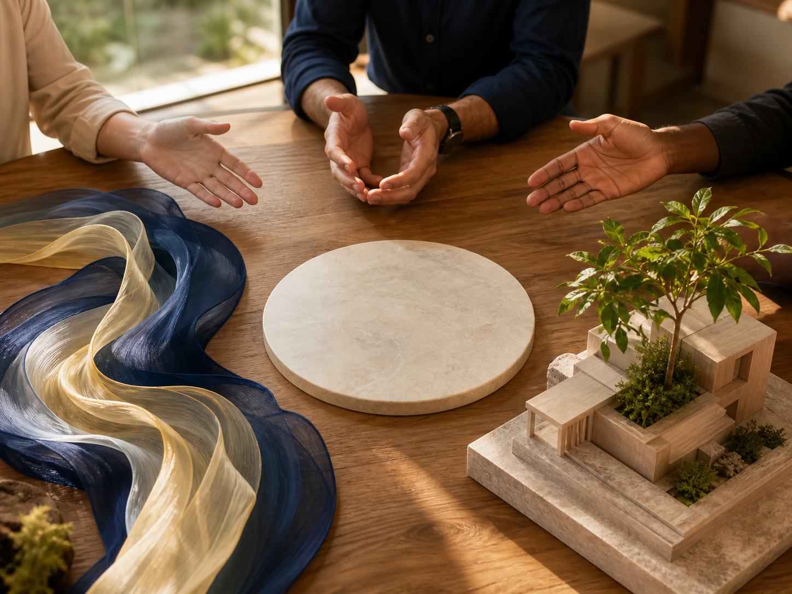

2026 大局策略：轉出新局，深耕人脈、穩中求快
今天聽完「4U 2026 年創富運數大會」，內心充滿了能量與方向
由 Michael 老師跟 Tina 老師主講的這場大會，不只是談運勢，更是談策略。
很多人問我，面對未知的明年該怎麼拚？
老師們針對三個方面，提供給了大家具體的執行策略
這套策略包含「天、人、地」三個面向，也就是密碼中的 1、6、8：
趨勢變化：看懂風向，順勢而為。
人際關係互動策略：搞定人，事就成了。
事業與財富的發展：落地執行，變現價值。
由於課程內容相當豐富， 我把它濃縮總結成底下這句話：
2026年大局策略 『轉出新局，深耕人脈、穩中求快』
但如果不行動，這些策略就只是文字。 一個人要有所改變，一定是從「有意識」地開始。
你知道嗎？ 心的力量是大腦的五千倍。
一切都要從心開始，由心出發去影響你的生活。 心之所向，行之所至，得之所願。
如果你還覺得被世界綁住的話，
那麼，就是你的心綁住了你自己， 是你的認知綁住了你自己。
「世界就是你心境的反射。」

而心態是什麼？ 心態就是心靈能量的顯示器
人人都有無限能量，人人都能掌控心態。
「行動加上聚焦，意識加上能量，終將無所不能。」
為了讓大家明年更有方向， 以下是我自己總結了 1 到 9 號人，今年最核心的動作，送給大家：
1號：轉出新局
2號：轉出雙贏
3號：轉出行動
4號：轉出結構
5號：轉出多元
6號：轉出價值
7號：轉出成果
8號：轉出迭代
9號：轉出自性
最後感恩 Michael 老師， 送我們 2026 年的一句話，這句話值得掛在我們辦公桌前：
「創富、起新局、站得更穩、說得更動人、能留住好人才、把價值放大變現、瀟灑放下該放的執念。」
願我們在 2026，都能轉出屬於自己的新局。
如果你喜歡這種內容的話
千萬不能錯過4U的課程
還有每年的運勢大會!
你的業績卡住了嗎？
我也走過那段「心累」的路，所以我懂那種明明很努力，卻一直卡在同一關的感覺。
如果你想知道：
你的「業務原廠設定」，適合主動開發，還是穩定經營？
你真正卡住的地方，是「開發」、「開口」，還是「成交」？
企業團隊想提升成交力，可以怎麼設計內訓？
想學更多，或邀約企業內訓，歡迎從這裡認識我：
Instagram：eintaixin
個人官網